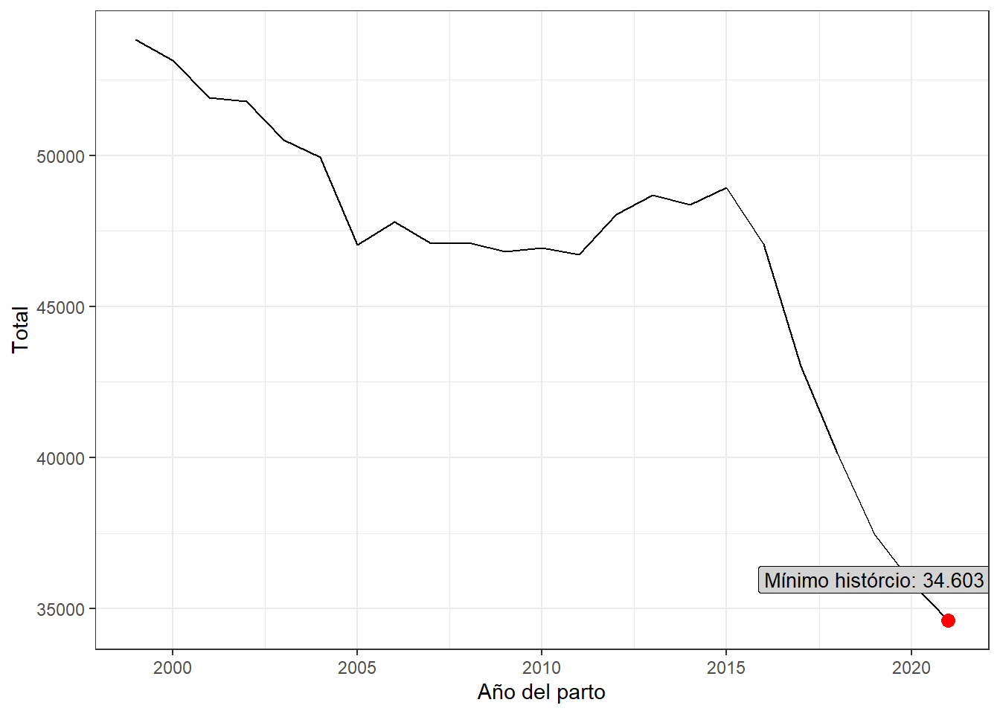
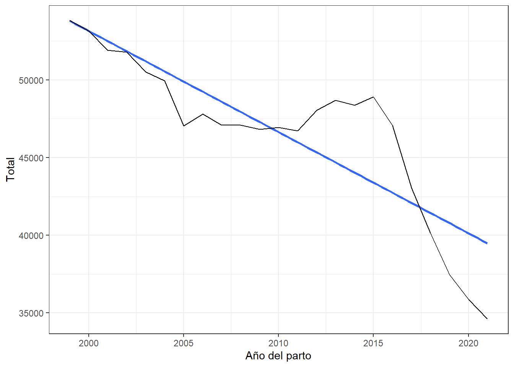
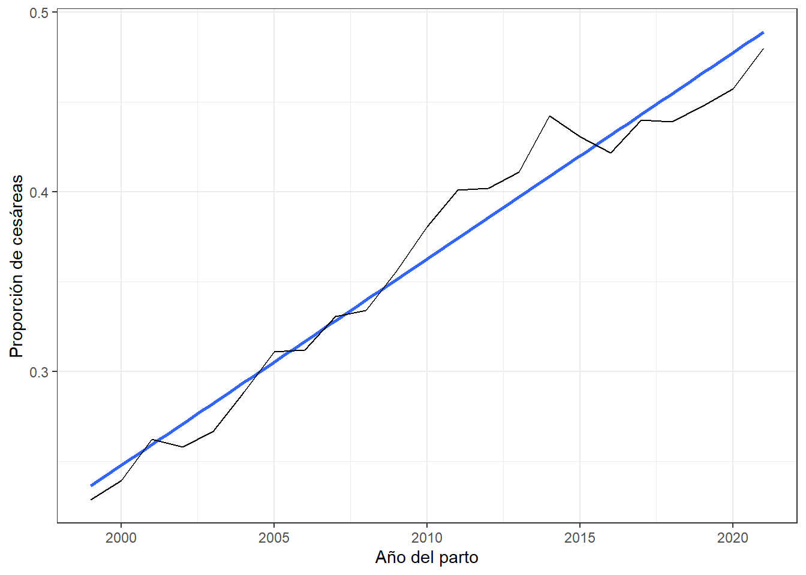
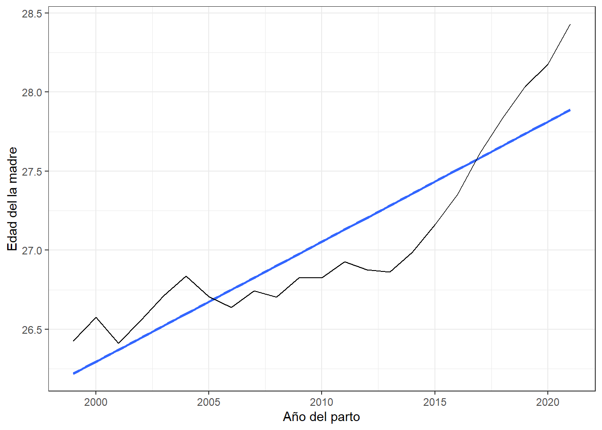
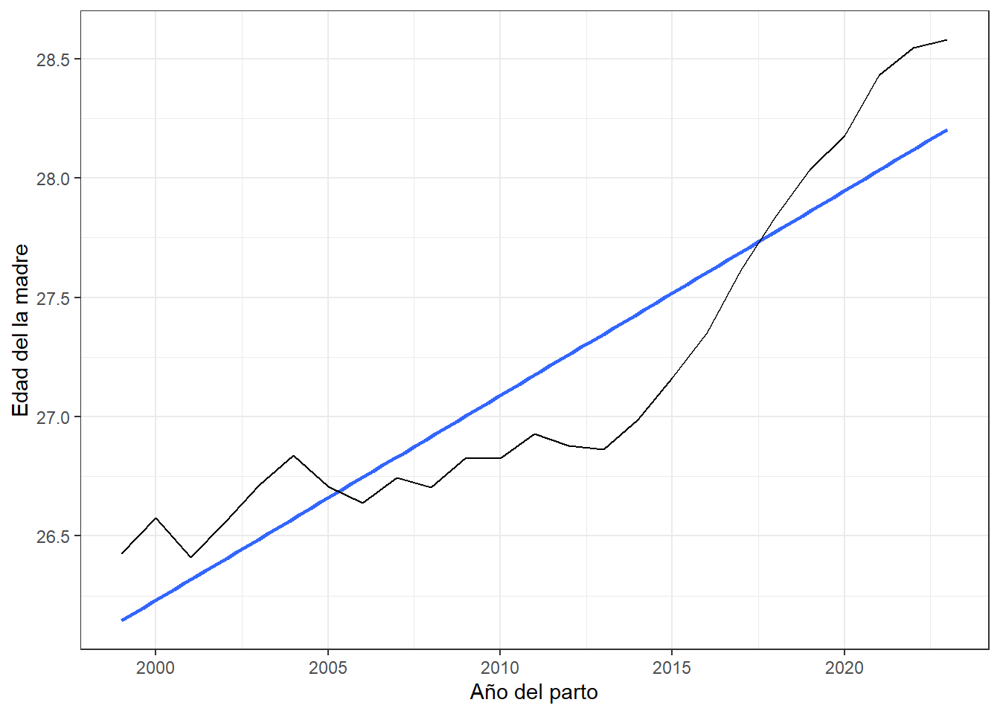
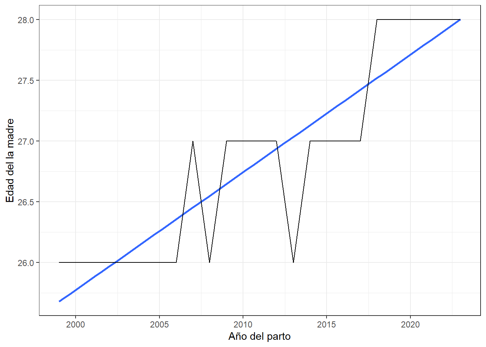

Natalidad en Uruguay entre los años 1999 y 2021
Quarto
Cesáreas
Otro aspecto interesante a analizar es la evolución de la propoción de cesáreas (total de cesáreas/total de nacimientos)
Call:
lm(formula = Total ~ Anio_parto, data = total_por_anio)
Residuals:
Min 1Q Median 3Q Max
-4882.2 -1376.9 -476.8 832.0 5535.0
Coefficients:
Estimate Std. Error t value Pr(>|t|)
(Intercept) 1355090.33 175608.39 7.717 1.46e-07 ***
Anio_parto -650.97 87.37 -7.451 2.53e-07 ***
---
Signif. codes: 0 '***' 0.001 '**' 0.01 '*' 0.05 '.' 0.1 ' ' 1
Residual standard error: 2779 on 21 degrees of freedom
Multiple R-squared: 0.7256, Adjusted R-squared: 0.7125
F-statistic: 55.52 on 1 and 21 DF, p-value: 2.525e-07 1 2 3 4 5 6 7
33626.5217 32975.5543 32324.5870 31673.6196 31022.6522 30371.6848 29720.7174
8 9 10 11 12 13 14
29069.7500 28418.7826 27767.8152 27116.8478 26465.8804 25814.9130 25163.9457
15 16 17 18 19 20 21
24512.9783 23862.0109 23211.0435 22560.0761 21909.1087 21258.1413 20607.1739
22 23 24 25 26 27 28
19956.2065 19305.2391 18654.2717 18003.3043 17352.3370 16701.3696 16050.4022
29 30 31 32 33 34 35
15399.4348 14748.4674 14097.5000 13446.5326 12795.5652 12144.5978 11493.6304
36 37 38 39 40 41 42
10842.6630 10191.6957 9540.7283 8889.7609 8238.7935 7587.8261 6936.8587
43 44 45 46 47 48 49
6285.8913 5634.9239 4983.9565 4332.9891 3682.0217 3031.0543 2380.0870
50 51 52
1729.1196 1078.1522 427.1848 
# A tibble: 27 × 4
# Groups: Anio_parto [27]
Anio_parto `Total año` Total Prop_cesarea
<dbl> <int> <int> <dbl>
1 1995 1580 315 0.199
2 1996 58615 12859 0.219
3 1997 54867 11976 0.218
4 1998 1247 286 0.229
5 1999 53833 12311 0.229
6 2000 53151 12721 0.239
7 2001 51905 13619 0.262
8 2002 51794 13366 0.258
9 2003 50504 13473 0.267
10 2004 49959 14415 0.289
# ℹ 17 more rows
Call:
lm(formula = Prop_cesarea ~ Anio_parto, data = cesareas_tot_2[5:27,
])
Residuals:
Min 1Q Median 3Q Max
-0.020135 -0.009281 -0.004726 0.008258 0.033738
Coefficients:
Estimate Std. Error t value Pr(>|t|)
(Intercept) -2.270e+01 9.368e-01 -24.23 <2e-16 ***
Anio_parto 1.147e-02 4.661e-04 24.61 <2e-16 ***
---
Signif. codes: 0 '***' 0.001 '**' 0.01 '*' 0.05 '.' 0.1 ' ' 1
Residual standard error: 0.01483 on 21 degrees of freedom
Multiple R-squared: 0.9665, Adjusted R-squared: 0.9649
F-statistic: 605.8 on 1 and 21 DF, p-value: < 2.2e-16 1 2 3 4 5 6 7 8
0.5347040 0.5461755 0.5576470 0.5691185 0.5805900 0.5920615 0.6035329 0.6150044
9 10 11 12 13 14 15 16
0.6264759 0.6379474 0.6494189 0.6608904 0.6723619 0.6838334 0.6953048 0.7067763
17 18 19 20 21 22 23 24
0.7182478 0.7297193 0.7411908 0.7526623 0.7641338 0.7756052 0.7870767 0.7985482
25 26 27 28 29 30 31 32
0.8100197 0.8214912 0.8329627 0.8444342 0.8559056 0.8673771 0.8788486 0.8903201
33 34 35 36 37 38 39 40
0.9017916 0.9132631 0.9247346 0.9362061 0.9476775 0.9591490 0.9706205 0.9820920
41
0.9935635 
# A tibble: 27 × 2
Anio_parto edad_media_madre
<dbl> <dbl>
1 1995 26.1
2 1996 26.4
3 1997 26.3
4 1998 26.1
5 1999 26.4
6 2000 26.6
7 2001 26.4
8 2002 26.6
9 2003 26.7
10 2004 26.8
# ℹ 17 more rows


# A tibble: 27 × 2
Anio_parto edad_media_madre
<dbl> <dbl>
1 1995 47
2 1996 52
3 1997 54
4 1998 47
5 1999 49
6 2000 53
7 2001 49
8 2002 53
9 2003 53
10 2004 53
# ℹ 17 more rows# A tibble: 27 × 2
Anio_parto edad_media_padre
<dbl> <dbl>
1 1995 30.5
2 1996 30.8
3 1997 30.8
4 1998 30.7
5 1999 31.0
6 2000 31.4
7 2001 31.1
8 2002 31.3
9 2003 31.6
10 2004 31.7
# ℹ 17 more rows# A tibble: 27 × 2
Anio_parto edad_mediana_padre
<dbl> <dbl>
1 1995 30
2 1996 30
3 1997 30
4 1998 30
5 1999 31
6 2000 31
7 2001 30
8 2002 31
9 2003 31
10 2004 31
# ℹ 17 more rows# A tibble: 27 × 2
Anio_parto edad_maxima_padre
<dbl> <dbl>
1 1995 62
2 1996 78
3 1997 85
4 1998 63
5 1999 79
6 2000 77
7 2001 74
8 2002 84
9 2003 95
10 2004 76
# ℹ 17 more rows